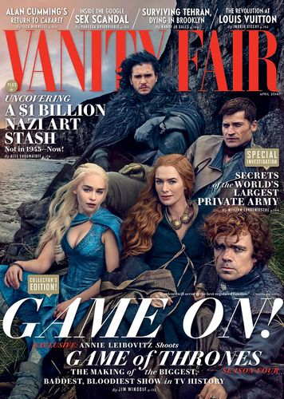

- 


冰与火之歌 权力的游戏
该剧改编自美国作家乔治·R·R·马丁的奇幻小说《冰与火之歌》系列。
詹姆·兰尼斯特
凯岩城领主泰温·兰尼斯特的长子。詹姆年仅十五岁就加入了疯王伊里斯的御林铁卫，是这支享有极高声誉的传奇性骑士队伍史上最年轻的成员。在篡夺者战争中杀死了疯王伊耿，由此得名“弑君者”。
提利昂·兰尼斯特
他是西境守护、凯岩城公爵泰温·兰尼斯特最小的孩子，是个容貌丑陋的侏儒。提利昂非常喜爱读书，善于思考，富有谋略。
罗柏·史塔克
头衔“北境之王”，别名少狼主，临冬城公爵艾德·史塔克的长子，临冬城的继承人。他的冰原狼名为“灰风（Grey Wind）”。由于违背与佛雷家族婚约，最终于伊耿历299AL被瓦德·佛雷以参加婚宴名义杀害于孪河城，世称“红色婚礼”事件
琼恩雪诺
You know nothing.
丹妮莉丝.
安达尔人、洛伊拿人和先民的女王/七国女王/统治者、全境守护、大草海的卡丽熙、镣铐/锁链破除者、弥林女王、龙石岛公主/不焚者、龙之母、弥莎、母亲、银发女王、银发女士、龙女王
冰与火之歌 权力的游戏
该剧改编自美国作家乔治·R·R·马丁的奇幻小说《冰与火之歌》系列。